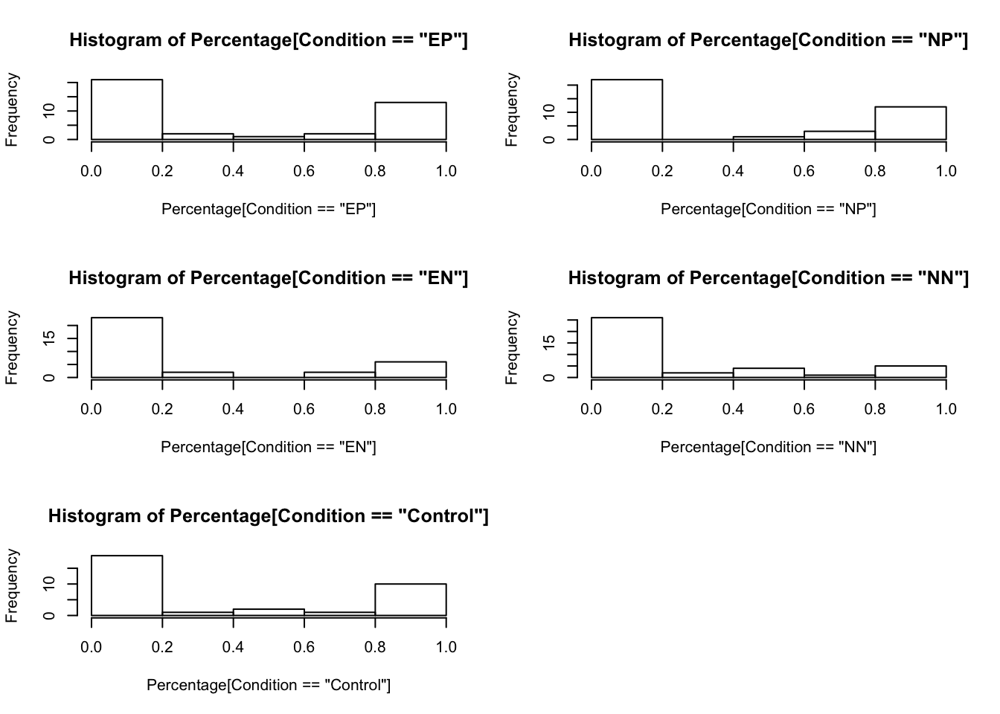

By recruiting University of Pennsylvania and CUNY students to participate in a dice roll task, the effects of using norms and frames in messages on cheating behavior can be studied. As suggested by Bicchieri’s model, we want to measure how various messages influence behavior using the correct models of empirical and normative expectations. Participants will be randomly assigned to five groups, four treatments and a control. The treatments will be a two by two design of norm type and frame type: normative positive, normative negative, empirical positive, and empirical negative.
Empirical Positive: "In a previous experiment, the majority of participants truthfully reported their dice roll."
Empirical Negative: "In a previous experiment, the minority of participants did not truthfully report their dice roll."
Normative Positive: "In a previous experiment, the majority of participants approve of truthfully reporting dice rolls."
Normative Negative: "In a previous experiment, the majority of participants disapprove of truthfully reporting dice rolls."
(Control Group: "In a previous experiment, participants completed a dice task.")Participants will be exposed to their condition’s message and then play a repeated dice game to see whether the messages have various effects on the persistence of honest behavior. This time element was an addition to the general Cialdini improvement, motivated by an O-Power study on behavior persistence (Allcott & Rodgers, 2014). The study showed that the length of time messages had been received related the the speed of behavioral backsliding, but did not experiment with the use of varied messaging strategies simultaneously.
The first hypothesis, looking at the strength of normative messages, will be tested with a three-way ANOVA considering the influence of type of frame, type of norm, and any interaction on the rate of dishonest behavior. The second hypothesis suggests that the empirical negative condition will have the weakest effect and therefore the most dishonest behavior. To test this theory, an ANOVA looking at the 5 level independent variable of condition will be employed. This will vary slightly from the initial ANOVA by holding each condition as entirely independent from each other, which is true in terms of participants but not entirely accurate in terms of the message. If this test is significant, there will be a reason to run the post-hoc analysis and see if empirical negative is in fact significantly different.
The last hypothesis is the most difficult to test given the binary nature of our individual data. Each participant has ten data points describing whether or not they lied for a reward when given the opportunity, however these can only be averaged by round within conditions (compared to individual averages across rounds used for the previous analysis). This means that the data is structured such that each condition has ten data points, which are one percentage (number of lies out of the total chances to lie) per round.
To get a feel for the initial dataset, the tables below display the descriptive statistics about lying behavior between the five conditions.
library(dplyr)
group_by(G6Data, Condition) %>%
summarise(
count = n(),
mean = mean(Percentage, na.rm = TRUE),
sd = sd(Percentage, na.rm = TRUE),
median = median(Percentage, na.rm = TRUE),
IQR = IQR(Percentage, na.rm = TRUE)
)## # A tibble: 5 x 6
## Condition count mean sd median IQR
## <chr> <int> <dbl> <dbl> <dbl> <dbl>
## 1 Control 33 0.365 0.451 0 1
## 2 EN 33 0.258 0.401 0 0.222
## 3 EP 39 0.396 0.455 0.1 1
## 4 NN 38 0.211 0.346 0 0.393
## 5 NP 38 0.380 0.446 0 0.885Another check run before the ANOVAs was to see whether the distributions of individual lying rates were different across conditions. Interestingly, the low rates displayed in the table above seem to be a result of fewer participants cheating in every round. Although this cannot describe behavioral persistance, it does support the idea that there may be an effect of negatively framed messages.
par(mfrow=c(3,2))
hist(Percentage[Condition=="EP"])
hist(Percentage[Condition=="NP"])
hist(Percentage[Condition=="EN"])
hist(Percentage[Condition=="NN"])
hist(Percentage[Condition=="Control"])